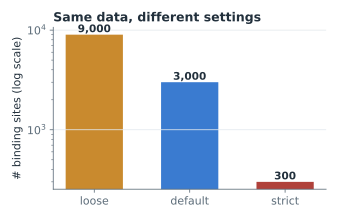
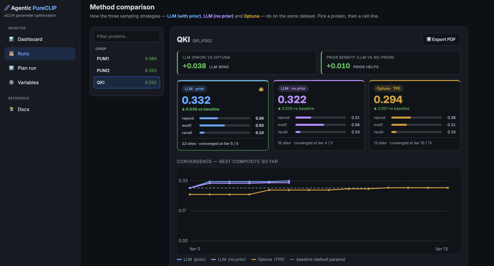
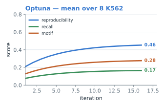
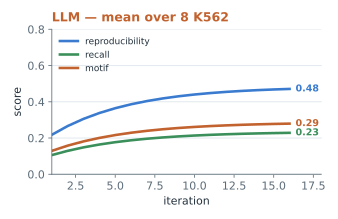
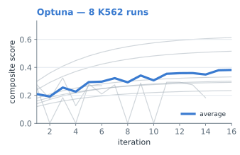
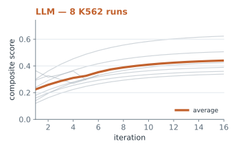
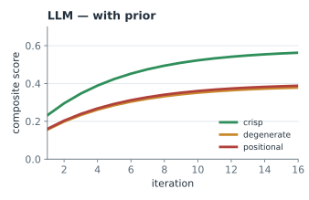
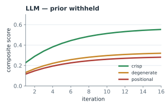
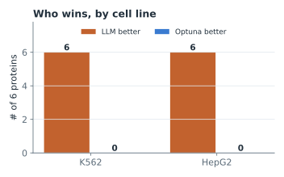

ML4RG: Project08-agenticpureclip · Helmholtz Munich × TUM
Can an LLM tune PureCLIP better than Bayesian optimization?
Automated parameter optimization for PureCLIP peak calling on eCLIP
data
Team Fadi Ferjani · Johannes Stephan · Paul
Möhnen · Wen-Yen Kuo
Supervisors Tobias Bernecker · Lambert Moyon
[ wide concept image — a stretch of RNA with an
RBP docking onto it: "where exactly does it bind?" — the
question this whole project answers ]
The problem
Finding where proteins grab onto RNA
In 30 seconds: genes are transcribed into RNA;
RNA-binding proteins (RBPs) dock onto that RNA to control
splicing, stability and translation. Knowing where they bind
is central to gene regulation — and to disease.
Proteins (RBPs) bind RNA to control it — splicing,
stability, translation.
An experiment called eCLIP shows roughly
where they bind, but only as a
noisy pile-up of reads.
A tool called a peak caller (PureCLIP) turns that noise
into a clean list of binding sites.
[ eCLIP schematic — figure from the eCLIP method paper (Van
Nostrand et al., Nat. Methods 2016) ]
PureCLIP reads — 2 IP replicate BAMs + 1 input-control
BAM (aligned crosslink pile-ups).
[ add: a few example BAM read lines ]
PureCLIP emits — per-nucleotide
crosslink sites + binding regions (BED).
[ add: an example site + region row ]
Why automate it
The tool has knobs, and the right setting keeps changing
Small changes to PureCLIP's settings →
wildly different site lists (see right).
No universal best setting: it depends on the protein,
the cell type, and experiment quality.
Manual tuning doesn't scale: hours per run, a
subjective "good", and
~20 GB across 26 ENCODE datasets to get through.
The 7 knobs: bandwidth · merge distance · high-precision
· input covariate · min. crosslink events · site width · cluster
gap.

Same data, three settings → an order-of-magnitude swing
in the number of called sites.
(mock)
Our approach
One loop, two interchangeable optimizers
Both optimizers call the exact same pipeline & scoring —
so the comparison isolates only how they propose the next
parameters.
Our approach
The tool we built to run and watch it

Live monitor — active run, current stage, queue and
ETA.
Leaderboard — LLM vs. Optuna, head-to-head per dataset.
Decision trail — every iteration's parameters, scores,
and (for the LLM) its reasoning.
Plan a run — pick a dataset, set ranges, schedule it.
Overnight batch — queue dozens of jobs within a
wall-clock budget, fail-tolerant: start it and come back a
week later.
How we judge "good"
One quality score, three biological signals
We judge each parameter set by three biological signals —
none trustworthy alone, so gaming any single one can't win. Only
then do we blend them into one number the optimizer climbs.
Reproducibility
Do the two lab repeats agree? Chance-corrected, so broad sites
can't fake it.
(obs − exp) / (1 − exp), exp from shuffled sites
Motif
Do sites carry the protein's RNA "word"? Genuine binding leaves
the motif.
frac. of ±15 nt windows with a PWM hit ≥ 80%
Recall
Do we recover the known reference binding regions?
frac. of ENCODE reference regions hit
…and this is how we weight them into one composite:
Collapse guard× min(1, sites/10): the score is
killed if the tool cheats by reporting only a few "perfect" sites.
Approach
How Optuna decides — TPE
First 10 trials random (warm-up).
Then it models which parameters gave good vs
poor scores.
Proposes where the good/poor ratio is highest (expected
improvement).
Why it suits here: a handful of bounded integer knobs,
each evaluation expensive, no gradients — the cheap,
derivative-free regime TPE is built for.
No biology, no rationale — statistical search only.
"TPE proposal — sampled from the surrogate model of previous
trials."
Optuna's log — a number, no explanation.
Approach
How the LLM decides — prompt & reasoning
What it's given (system prompt, excerpt)
You are optimising PureCLIP parameters for eCLIP data.
MAXIMISE the composite quality score — a blend of
reproducibility, motif and recall.
SEARCH BOUNDS + the full history with per-iteration deltas …
If reproducibility rose but recall/motif fell, you are
discarding real sites — revert.
The red lines are what steer
each decision.
What it answers
"Reproducibility and motif rate are low, recall high — sites
aren't aligned to known regions. Raise
merge_distance_nt 8→12 and drop
min_crosslink_events 3→2 to recover broader,
reproducible peaks."
reasoning + the exact parameter change, logged every iteration
(dashboard)
Same score, same budget as Optuna — but the LLM uses
outside biology and leaves an auditable trail.
By motif type: on crisp motifs
both optimizers land together, far above default; on
degenerate and especially
positional motifs the LLM pulls ahead
— its edge grows as the sequence signal weakens.
Motif tiers (all K562): crisp = sharp RNA word (RBFOX2
UGCAUG) · degenerate = fuzzy preference (HNRNPK C-rich) ·
positional = defined by location (U2AF2, SF3B4 at splice
sites).
Results
Inside the score: reproducibility · motif · recall
ILLUSTRATIVE — placeholder numbers, real results pending


The LLM lifts all three factors on hard motifs — most on
reproducibility and recall — while the
motif term stays low for positional binders either way (a
known scoring caveat, flagged in Limitations).
Results
How runs converge — Optuna vs LLM (all 8 K562)
ILLUSTRATIVE — placeholder trajectories, real results pending

Early stop: [hit in N/8, avg XX iters] — or —
[never triggered; all ran the full 16] — keep whichever
matches results.

Early stop: [hit in N/8, avg XX iters] — or —
[never triggered; all ran the full 16] — keep whichever
matches results.
Same 8 K562 datasets both sides. The bold line is the
mean composite per iteration across runs; on average the
LLM climbs higher and faster.
Results
Does the prior help? LLM with vs without it
ILLUSTRATIVE — placeholder trajectories/numbers (6 K562 datasets, 2
per tier)


Takeaway: with the prior all tiers climb; withhold it and
degenerate/positional collapse toward Optuna's level while
crisp is unchanged. A real but modest effect — the prior
helps most where the sequence signal is weak.
Results
Does the pattern hold in a second cell line?
ILLUSTRATIVE — placeholder numbers (6 proteins in both K562 and HepG2)

The 6 proteins run in both cell lines show the same LLM-vs-Optuna pattern.
Tie on crisp, LLM ahead on hard — in K562 and HepG2 alike.
So the result is not a K562 artefact.
The same shape — tie on crisp, LLM ahead on hard — reproduces
in HepG2, so the result isn't a K562 artefact.
Conclusion
What we found
We built
An automated loop that tunes PureCLIP against a biological
quality score.
A fair, equal-budget LLM-vs-search comparison across
8 proteins × 2 cell lines, with a priors ablation.
What we found
Tuning matters — both optimizers far beat the untuned default.
LLM ≈ Optuna on crisp motifs; the LLM pulls ahead as motifs
get harder — a slight but consistent edge.
The prior drives that edge — remove it and it goes.
Holds in a second cell line.
Bottom line: an LLM loop is a promising way to tune
bioinformatics tools — most useful where the signal is weak and expert
judgment matters.
Outlook
Where this goes next
Richer scoring
Adapt the objective — learn the weights, add metrics beyond
reproducibility / motif / recall, and down-weight weaker replicates.
Per-protein adaptation
Tailor priors and search per RBP — especially positional
binders, where a sharp motif is the wrong signal to chase.
Scale it out
Compute to test many more configs, fast — beyond chr21 to
genome-wide, across all 26 datasets and more RBPs at once.
chr21 fast-mode + the equal budget were deliberate scoping choices; the
natural next step is breadth — more proteins, more metrics,
genome-wide.
Thank you
Questions?
Automated PureCLIP parameter optimization — LLM vs. standard search
Fadi Ferjani · Johannes Stephan · Paul Möhnen · Wen-Yen Kuo
Backup
All datasets & runs — and where they appear
14 datasets · 34 runs · equal 16-iter budget
Arm
Datasets
Runs
Slide
Head-to-head K562
8 proteins
8 LLM + 8 Optuna
8, 9, 10
Priors ablation K562
6 (crisp→pos)
6 LLM no-prior
11
Cross-cell-line HepG2
6 proteins
6 LLM + 6 Optuna
12
Motif-difficulty view
8 K562, by tier
(same runs)
8, 9, 11
Baseline (untuned) = each LLM run's iteration 0 — no extra runs.